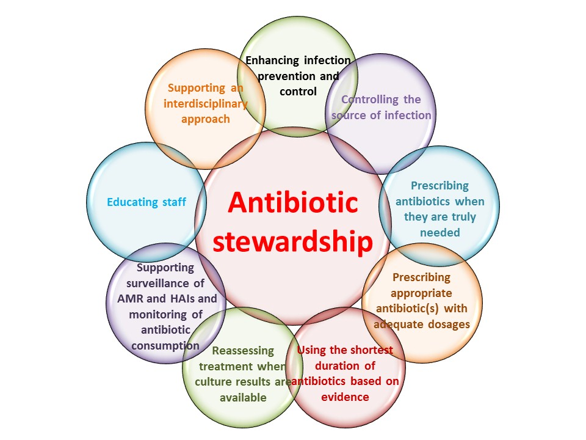
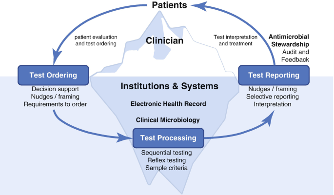
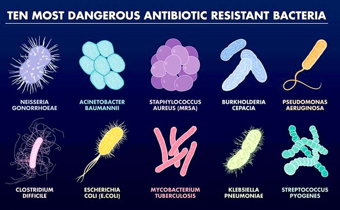

My first webpage
This is my first quarto document for a web page
Antimicrobial resistance: a global threat

Here you can find some information regarding AMR HTML
Antibiotic Stewardship Programs: a possible solution

Here you can find some information regarding ASP in children HTML
Here you can find some information regarding the study on ASP in Pediatric Emergency Department at our University Hospital HTML
Here you can find my PhD presentation PDF
Diagnostic Stewardship Programs: a new era?

AMR is a global health threat with affect both low and middle income countries and high income countries
The impact of AMR in children is high, especially considering that new antibiotics, effective against multidrug-resistant organisms (MDROs) are not available for pediatric population.
The burden of AMR on adults and elderly is important; MDROs represent the most common pathogens responsible of Healthcare associated infection.
AMR is considered by WHO as one of the ten global threat
The most dangerous antibiotic resistant bacteria

ASP may represent a tool to fight against AMR
Antibiotics are widely prescriped, in many cases for viral infections, especially in children
The misuse and overuse of antibiotics led to an increase in antibiotic resistance